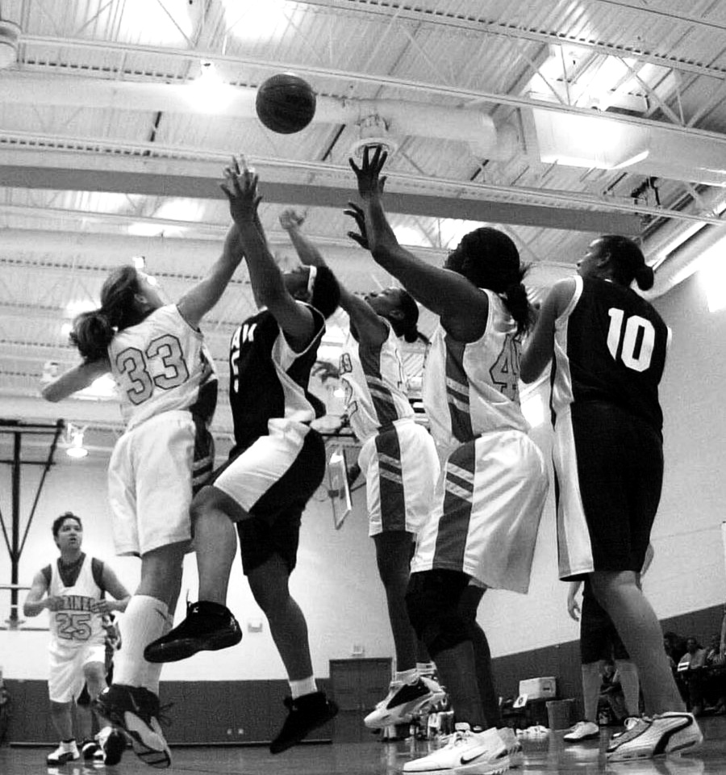

Fotos: Dpto. de Defensa de EE. UU. (2014) y U.S. Navy (2011) · dominio público
MICHIGAN STATE · TEMPORADA 1999–2000
REGLAS
1.
SIN REGLAS

OTRO EQUIPO, OTRA ÉPOCA
Foto: U.S. Navy, 2004 (no es Michigan State) · dominio público
DEPORTES · FINAL NCAA · 2000
CAMPEONES NACIONALES
Michigan State 89 · Florida 76
Periódico y trofeo: recreación · fuentes: MSU Athletics, Sports Illustrated
Fotos: Departamento de Defensa de EE. UU. y U.S. Navy (dominio público), vía Wikimedia Commons. Calendario, casco, hombreras, pista, libreta, periódico y trofeo: recreación.